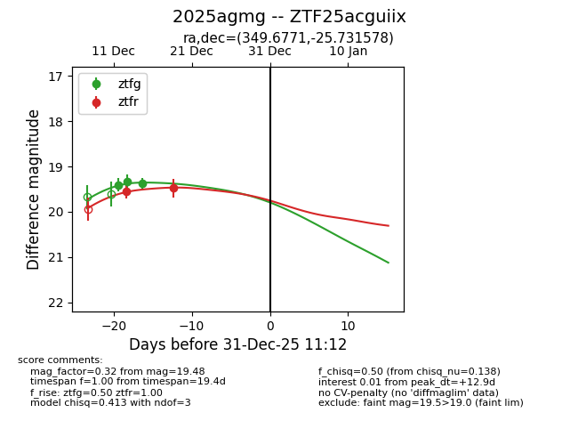
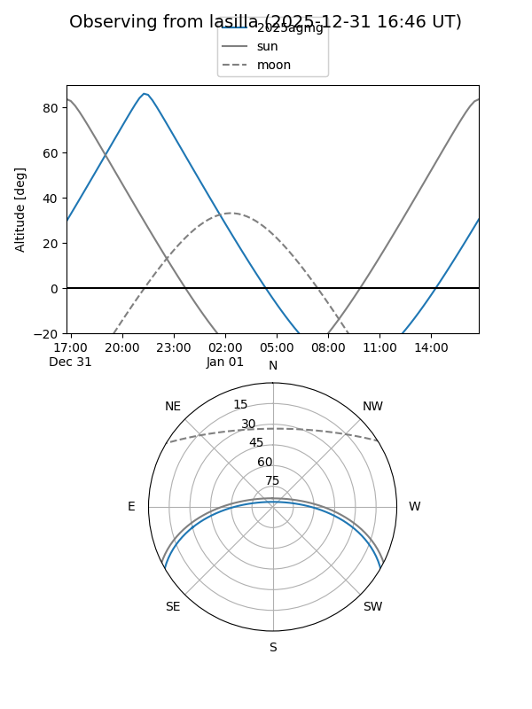
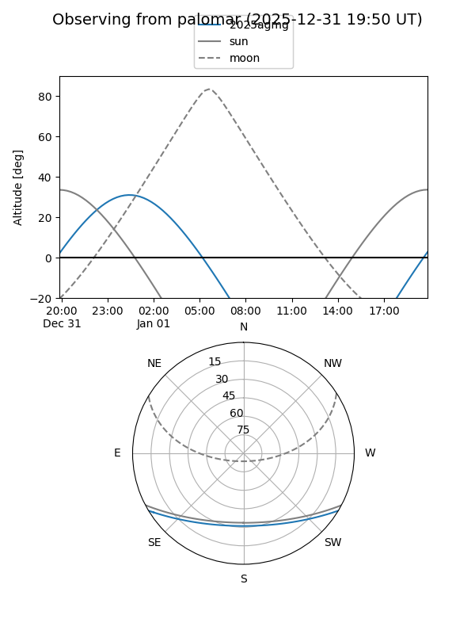

2025agmg
Target 2025agmg at 2025-12-18 11:18
Aliases and brokers:
FINK: fink-portal.org/ZTF25acguiix
Lasair: lasair-ztf.lsst.ac.uk/objects/ZTF25acguiix
ALeRCE: alerce.online/object/ZTF25acguiix
TNS: wis-tns.org/object/2025agmg
YSE: ziggy.ucolick.org/yse/transient_detail/2025agmg
alt names
ZTF25acguiix (ztf,fink_ztf)
2025agmg (tns,yse)
Coordinates:
equatorial (ra, dec) = 349.6771,-25.73158
equatorial (HMS+DMS) = 23:18:42.51,-25:43:53.68
galactic (l, b) = (31.5116,-69.22300)
Photometry
last ztfg=19.37, ztfr=19.55
3 ztfg, 1 ztfr detections
Lightcurve

Visibility


Additional plots